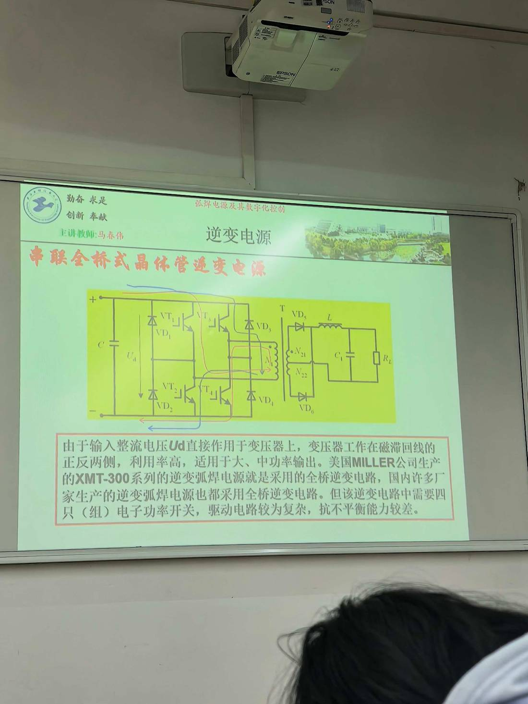

13 手写笔记/课堂实拍/kt-06 串联全桥式逆变电路（利用率高、适合大中功率）
kt-06 串联全桥式逆变电路（利用率高、适合大中功率）
📷 课堂实拍 · 老师标注为重点（原图见下；文字为转录，公式/接点以图为准）
串联全桥式逆变电路（利用率高、适合大中功率）

实拍转录
- 老师红字标题：串联全桥式晶体管逆变电源。
- 原话：由于输入整流电压 Ud 直接作用于变压器上，变压器工作在磁滞回线的正反两侧，利用率高，适用于大、中功率输出。
- 美国 MILLER 公司生产的 XMT-300 系列逆变弧焊电源就是采用的全桥逆变电路，国内许多厂家生产的逆变弧焊电源也都采用全桥逆变电路。
- 但该逆变电路中需要四只（组）电子功率开关，驱动电路较为复杂，抗不平衡能力较差。
本页重点
- 全桥的两个"最"：磁利用率最高（Ud 直接加在变压器上）、功率最大（大中功率）。
- 两个代价：四只（组）开关 → 驱动复杂；抗不平衡能力较差。
- 识图：VT₁~VT₄ 对角导通，VD₁~VD₄ 做续流/钳位，二次 N₂₁/N₂₂ + VD₅/VD₆ 全波整流。
考点（怎么考）
- 全桥 vs 半桥 vs 推挽：耐压、器件数、功率等级、利用率一张表说清。
- 为什么全桥抗不平衡能力差？（套管/桥臂参数不一致时偏磁无法自纠）
对应讲义页
关联
- 概念卡：双端逆变电路 · 逆变式弧焊电源的特点
- 讲义：00 第6章 逆变式 导航 · 总览：课堂实拍总览
- 索引：01 弧焊电源 MOC · 课件标红总表